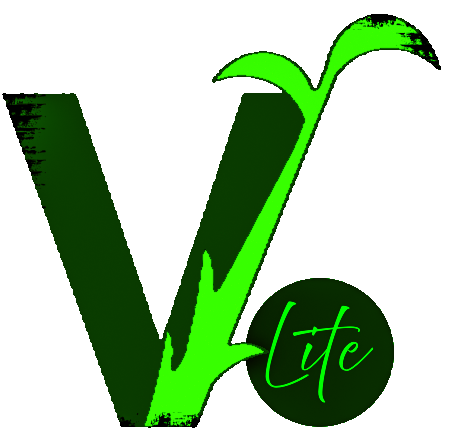
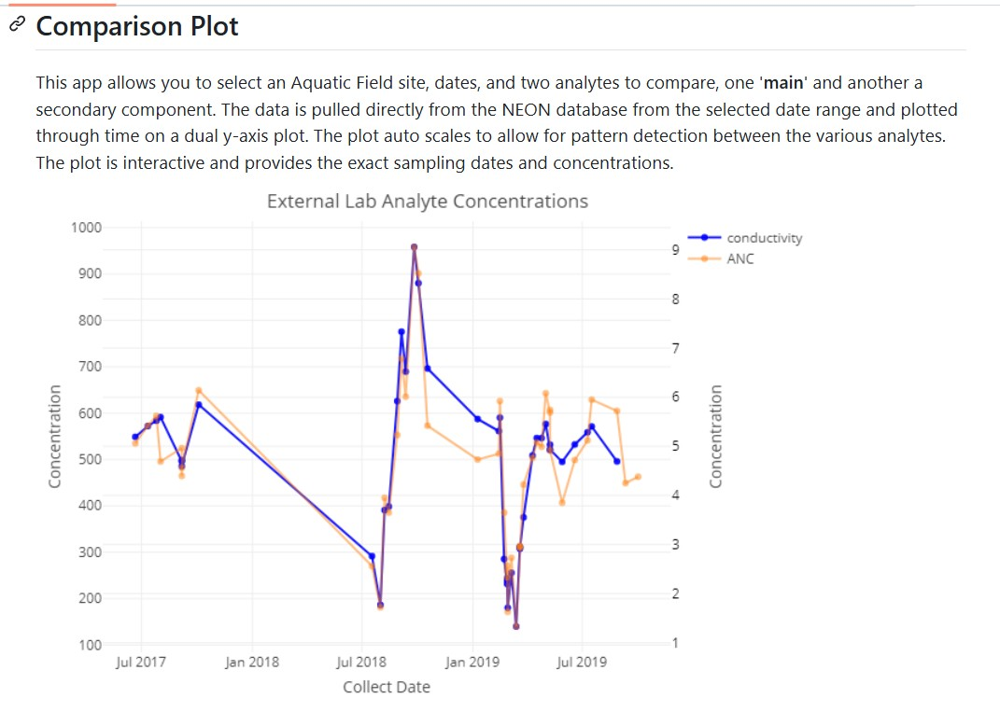

My Projects
These are some of the projects I’ve built…
VGSLite
VGSLite is a R based helper application (.exe install) built to support VGS 5 Desktop on Windows devices.
Code: GitHub
Live App: Local-only .exe installable app

⭆ Installation
To install VGSLite on your Windows device:
- Download the latest release from VGSLite.
- Unzip the folder and run VGSLite Setup 1.1.0.exe.
- You may have to click “more info” in order to install the application as it is not code certified.
⭆ Features
✅ Clean Database: Cleans up any orphan data links that may exist to help prevent corrupt data. Often used before “Empty Tombstone” to troubleshoot sync issues.
✅ Convert database to Local: Moves cloud data into local folders. Not recommended unless you plan on only collecting data locally.
✅ Delete Unassigned data: Deletes all data and sites inside the “Unassigned” bin at once instead of going though each event.
✅ Empty Tombstone: Clears deletion cache, often used to troubleshoot sync issues.
✅ Move Event: Lets user move a single event from an existing site to another site. Often used when an event was put on the wrong site. This WILL NOT UPDATE SYNC STATE (i.e., cloud-to-local or local-to-cloud).
⭆ Usage After launching the app:
✅ Select a task from the drop-down (e.g., “Move Event”).
✅ Follow prompts (e.g., Select Site to move from, Site to move to, and date of Event to move, then confirm selections).
✅ Click through confirmation pop-ups to see what is being done.
✅ Make sure to close out VGS 5 if open, and reopen it to confirm changes.
NCAA Recruitment Trend Visualizer
Scrapes recruiting data from multiple sports sites (e.g., 247Sports, On3) to visualize Big 12 football and basketball class rankings. Custom R scripts handle data extraction, cleaning, and plotting, with interactive controls for sport, class year, and team. Built in Shiny with Leaflet for dynamic geospatial visualizations.
⭆ Big 12 College Basketball Recruiting Class Grades from 2016-2025 ⬇️
{kind=link}
⭆ University of Arizona vs ASU Basketball Recruit Comparisons ⬇️
{kind=link}
VGS Batch Importer
An ETL pipeline built in R to ingest historical Excel datasheets into a SQLite database. Supports multiple vegetation protocols (e.g., point ground cover, line intercept, nested frequency) across transects and sites. The app parses data using key identifiers (e.g., SiteID), organizes metadata, and inserts structured records into a local VGS database. QA/QC checks are embedded to prevent corrupt or incomplete data from being ingested.
- Code: GitHub
- Live App: Local-only Shiny app
Applications Details ⬇️

The app interface has options to select protocols available for ingest. It has various options depending on the import:
Power Mode: This check box bypasses errors by generating and opening a excel workbook to review. The errors are then fixed and eventually the import happens with this setting turned off.
Species Replace: This check box enables a SpeciesReplace.xlsx file that can be used to mass update species codes for every file instead of going into each individual file and changing it individually. This is exceptionally helpful when a USDA code has had an update or a client uses the wrong code consistency.
Select Protocol for Import: Sampling protocols (quanitative data collection through VGS) are hard-coded for the selection drop down list. Surveys (qualative data collection through VGS) were designed later and query the local VGS database on your local machine to offer drop down selections for what surveys are available on the device to import data to.
Batch Import Data: This prompts a pop up window to select the batch import files to import (multiple .xlsx files can be imported at once).
Species Count: This button queries that VGS database and counts the species at each site to provide an overview of the data that was collected.
Species Check: This button brings a pop up that lets the client select a list of states that the sites are located. It then compares the plant codes in the database to USDA plant lists by each state (www/sp_lists_USDA) to check for inconsistencies and data entry errors.
Update Site Name: This links to a script that looks through all location lat/long coordinates and check them in a USFS enterprise shape file to help predict what folder (Allotment/Pasture) they belong in and rename them according to USFS naming conventions (numeric based off of Region-Forest-Ranger District-Allotment-Pasture-SiteID).
Survey Log Input?: This new feature offers survey (qualitative data) import with pre-built surveys. This section is still under development.
ü¶ê: This is a help button that provides general workflow for batch importing data with this app.
Power Mode ⏬
Species Replace ⏬
Species Count ⏬
Species Check ⏬
This app also generates a log text file stored in the ‘www/’ folder to track code flow and debug import issues. ⏬

NEON Small Mammal Tracker
Interactive Shiny app visualizing small mammal capture data from the National Ecological Observatory Network (NEON). Users select location and date range to compare capture volumes across NEON sites. The app processes individual ID tags to rank sites by total captures, revealing spatial and temporal trends in mammal activity.

NEON Water Chemistry Viewer
This Shiny app lets you explore NEON’s Surface Water Chemistry (SWC) data across ecological sites in the U.S. Just pick a date range, aquatic site, and two analytes to compare, then hit “Process Selection(s)” to see how they stack up. It’s built to help visualize water chemistry shifts over time and across space. Curious about how the data’s collected? Click on any SWC label in the app, or learn more about NEON’s mission here.

Electron-Bundled Shiny Desktop App
A standalone desktop tool combining a Shiny UI with an embedded SQL database. Designed for offline use by research teams and field data loggers, it enables structured data entry, updates, and retrieval without cloud dependencies. Built with Electron and R-Portable, the app runs as a self-contained Windows executable, no R installation required.
- Code: GitHub
- Live App: Local-only Shiny app
Contact me @ tsgilbert@arizona.edu for questions, feedback, suggestions, or if you want to collaborate!